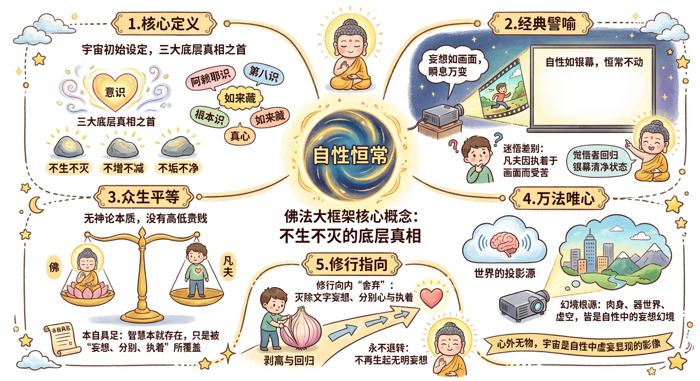
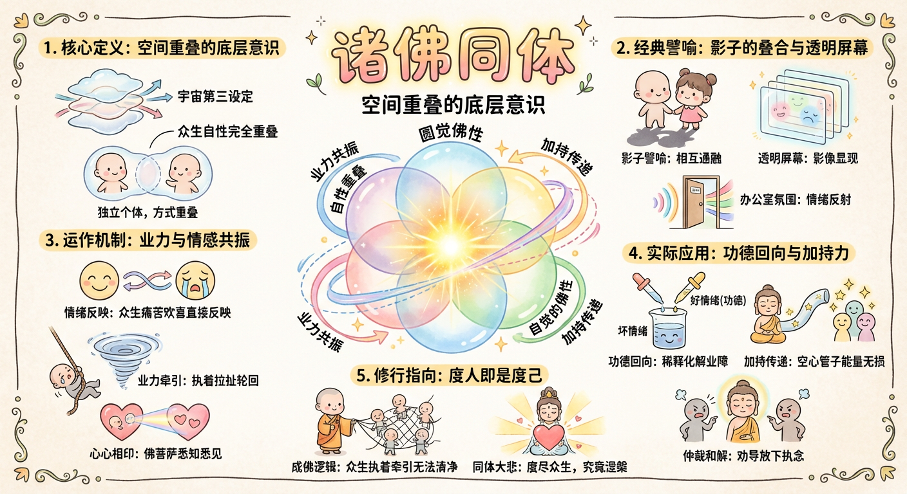
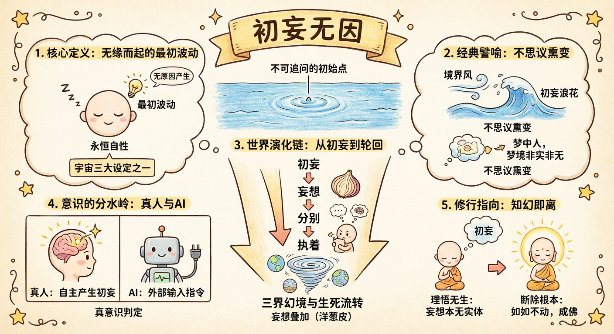
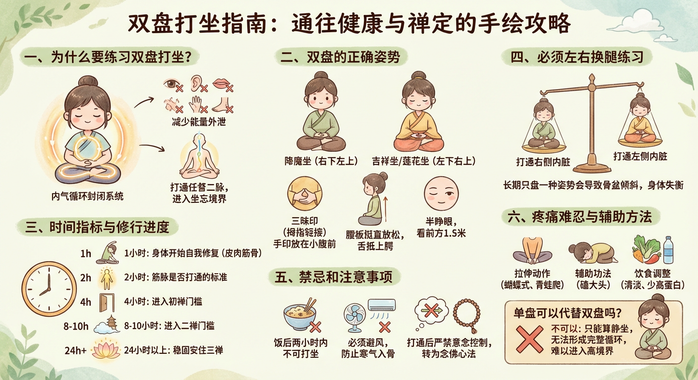
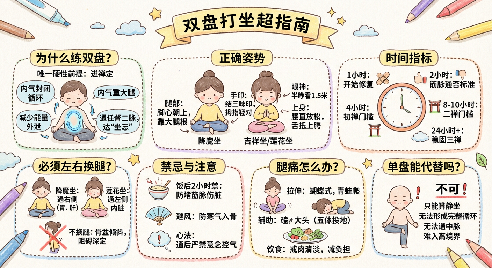

基礎概念
佛法修行的根本理論基礎，理解自性與諸佛的本質關係。



心性修行
認識妄想、分別、執著，了解心性運作的根本機制。
妄想


分別


執著


根器分類
了解不同根器眾生的特點與修行方法。
上三根


下三根


戒行修持
修行中需要持守的戒律與行為準則。
淫慾


戒肉


禪修方法
具體的禪修技巧與實修要點。
滅文字妄想


疑情


思情


雙盤


因果法則
業力因果的運作原理與深層機制。
業


禪定境界
從欲界定到四禪的禪定層次與境界特徵。
欲界定


初禪


二禪


三禪


四禪